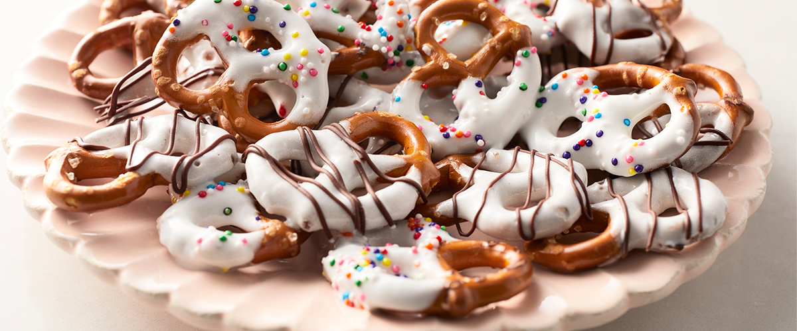

Yogurt Dipped Pretzels

Description
A sweet treat for the whole family: Dip mini pretzels in sweetened Greek yogurt for a yummy snack or dessert; decorate with sprinkles to your heart's content!
Ingredients
- 2 cups yogurt
- 5 cups powdered sugar
- Miniature pretzels
- ½ cup chocolate chips, melted
- Sprinkles
Steps
- In a large bowl, combine Greek Yogurt with powdered sugar.
- Line a half baking sheet with wax paper
- Dip ¾ of each pretzel into the yogurt mixture. Place onto baking sheet.
- Place melted chocolate into a small ziplock bag, snip a corner of the bag and drizzle onto half of the pretzels.
- Add sprinkles to the remaining pretzels.
- Place in the freezer for at least 2 hours or overnight to chill.Keep in the freezer until ready to serve.